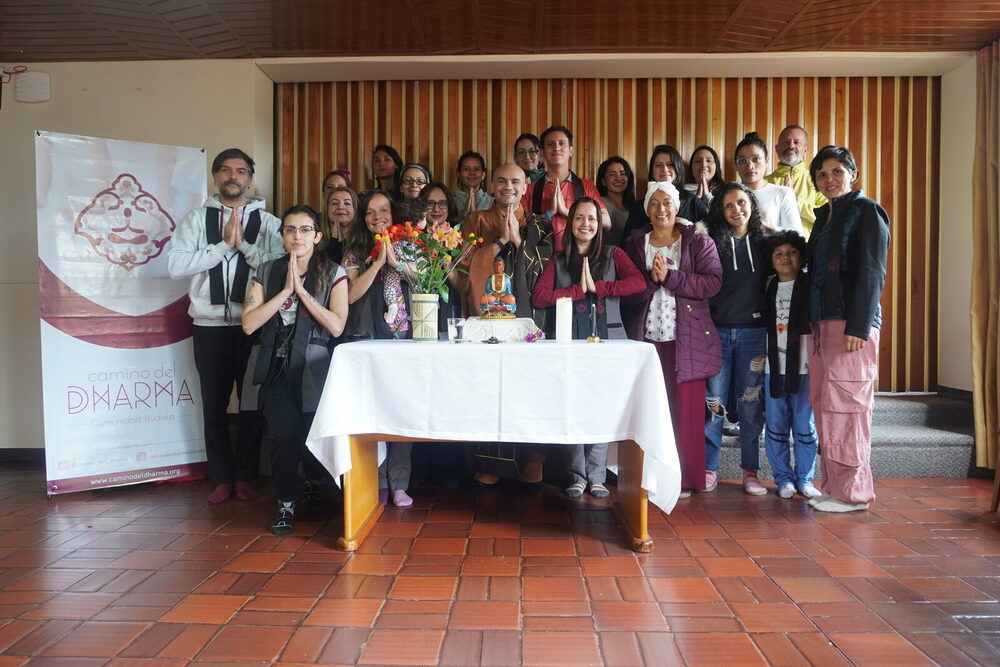

Estamos conectados, pero seguimos solos
La Sangha como refugio en tiempos de hiperconexión

Al terminar el día, muchas personas dejan el teléfono sobre la mesa y, por primera vez en horas, la pantalla deja de reclamar su atención. Es entonces cuando aparece una sensación difícil de nombrar. Han respondido mensajes, revisado las redes sociales, participado en reuniones virtuales y permanecido, aparentemente, conectadas con el mundo. Sin embargo, en ese breve silencio descubren que hace tiempo no sostienen una conversación que realmente las haya conmovido.
No les faltaron mensajes. Les faltó encuentro.
Cada vez escuchamos con más frecuencia historias parecidas. Personas que hablan con mucha gente durante el día, pero que sienten que hace semanas nadie les pregunta, con verdadero interés, cómo están. Personas que sonríen en una videollamada y, al cerrarla, vuelven a experimentar una silenciosa sensación de vacío. Es una paradoja difícil de ignorar ya que nunca habíamos contado con tantas formas de comunicarnos y, sin embargo, cada vez parece más difícil encontrarnos.
No se trata solo de una percepción. La Organización Mundial de la Salud advirtió que una de cada seis personas en el mundo experimenta soledad y que el aislamiento social constituye un factor de riesgo para la salud física, mental y el bienestar. No estamos, por tanto, ante un problema exclusivamente emocional, sino frente a un desafío social que comienza a transformar la manera en que vivimos, trabajamos y nos relacionamos (Organización Mundial de la Salud, 2025).
Tal vez no hablamos poco. Tal vez hemos olvidado cómo encontrarnos.
La paradoja de la hiperconexión
Casi sin darnos cuenta, hemos empezado a vivir con prisa incluso cuando no existe ninguna urgencia. Respondemos mensajes mientras caminamos, escuchamos a alguien mientras revisamos otra conversación y compartimos fotografías antes de haber vivido plenamente aquello que deseábamos recordar. La velocidad ha dejado de ser únicamente una característica de nuestro tiempo; poco a poco se ha convertido en una forma de habitar el mundo.
En ese contexto, resulta fácil confundir disponibilidad con presencia.
Pero estar disponibles no significa estar presentes.
La presencia no depende de una aplicación ni de una mejor conexión a internet. Nace cuando dejamos de mirar la pantalla para mirar realmente a quien tenemos delante. Requiere atención, escucha y la disposición de permitir que la experiencia del otro también transforme la nuestra.
En ocasiones pensamos que la respuesta consiste simplemente en aprender a estar solos. Sin duda, existe una soledad que puede ser profundamente fecunda. Es la del retiro voluntario, la del silencio que permite observar la mente con mayor claridad y descubrir que no necesitamos llenar cada instante con estímulos para sentirnos vivos. El budismo ha reconocido desde sus orígenes el valor de ese espacio interior, y muchos de sus grandes maestros/as encontraron allí una fuente de sabiduría.
Pero esa no es la única forma de estar solos.
Existe también una soledad que no libera, sino que pesa. La experimenta quien siente que no tiene con quién compartir sus preguntas, sus miedos o sus alegrías; quien permanece rodeado de personas y, aun así, siente que nadie conoce verdaderamente lo que ocurre en su interior.
No toda persona que está sola sufre. Pero nadie debería acostumbrarse a vivir sin sentirse visto por otro ser humano.
Confundir estas dos experiencias puede llevarnos a idealizar el aislamiento como si fuera siempre una oportunidad espiritual. No lo es. Hay momentos en los que el camino hacia una vida más consciente comienza, precisamente, cuando aceptamos volver a encontrarnos con los demás.
La Sangha como un refugio para nuestro tiempo
Cuando una persona toma refugio en el budismo lo hace en el Buda, el Dharma y la Sangha. Habitualmente comprendemos con facilidad los dos primeros. El Buda representa la posibilidad del despertar y el Dharma el camino que orienta nuestra práctica. La Sangha, en cambio, suele entenderse simplemente como "la comunidad".
La traducción es correcta, pero resulta insuficiente.
Una Sangha no es cualquier grupo de personas. Es una comunidad que decide ayudarse mutuamente a no olvidar el Camino. Un lugar donde la práctica deja de ser un proyecto exclusivamente individual para convertirse en una experiencia compartida.
Nuestra cultura suele valorar la autosuficiencia. Aprendemos que debemos resolver solos nuestras dificultades, gestionar nuestras emociones sin depender de nadie y demostrar fortaleza incluso cuando por dentro nos sentimos frágiles. Sin embargo, el budismo recuerda una verdad mucho más sencilla y, al mismo tiempo más profunda y es que nada existe de manera aislada.
Nuestra vida depende del aire que respiramos, del alimento que otros cultivaron, del lenguaje que aprendimos de quienes nos precedieron y del cuidado recibido mucho antes de que pudiéramos valernos por nosotros mismos. También depende de las personas que hoy nos acompañan, nos cuestionan, nos escuchan y, a veces, incluso nos muestran aquello que todavía necesitamos aprender.
La interdependencia no es una teoría budista. Es la manera en que la vida sucede.
Desde esa comprensión, reconocer que necesitamos de los demás deja de ser un signo de debilidad para convertirse en una expresión de sabiduría.
Por supuesto, ninguna comunidad es perfecta. Toda Sangha está formada por seres humanos y, allí donde hay seres humanos, existen diferencias, desacuerdos y aprendizajes pendientes. Su valor no radica en la ausencia de conflictos, sino en la posibilidad de atravesarlos sin renunciar al vínculo. Permanecer, escuchar, dialogar, pedir perdón cuando es necesario y alegrarnos sinceramente por el bienestar de los demás también forman parte del entrenamiento espiritual.
En tiempos en los que se nos invita a resolverlo todo solos, la Sangha resulta casi contracultural. Nos recuerda que nadie despierta completamente solo y que la práctica encuentra una profundidad distinta cuando puede sostenerse junto a otros.
Volver a encontrarnos
Quizá el mayor desafío de nuestra época no consista en aumentar el número de personas con las que nos comunicamos, sino en recuperar la capacidad de encontrarnos verdaderamente con ellas.
Todos necesitamos un lugar donde el silencio no resulte incómodo, donde las preguntas puedan formularse sin miedo y donde no sea necesario aparentar que todo está bien para sentirnos acogidos. Necesitamos espacios donde la escucha tenga tanto valor como la palabra y donde el crecimiento espiritual no se mida por los logros individuales, sino también por la manera en que aprendemos a cuidar la vida compartida.
La Sangha ofrece precisamente esa posibilidad. No elimina el sufrimiento ni evita las dificultades propias de la existencia. Lo que hace es recordarnos que el camino nunca estuvo pensado para recorrerse completamente solos. Quizá el opuesto de la soledad no sea simplemente estar acompañados. Quizá sea descubrir que pertenecemos. Que nuestra vida siempre ha estado entrelazada con otras vidas, aunque con frecuencia lo olvidemos.
El budismo llama Sangha a esa experiencia de caminar junto a otros. No porque el camino se vuelva más corto o fácil, sino porque, cuando alguien camina a nuestro lado, incluso el silencio deja de sentirse vacío.
Si esta reflexión resonó contigo, te invitamos a conocer los espacios de meditación, estudio y práctica de la Comunidad Buddhista Camino del Dharma. A veces basta un lugar donde podamos sentarnos juntos, guardar silencio y recordar que el Camino también se aprende en comunidad.
Referencias consultadas
- Holt-Lunstad, J. (2024). La conexión social como prioridad de salud pública. Annual Review of Public Health, 45, 193-210.
- Organización Mundial de la Salud. (2025). Comisión de la OMS sobre Conexión Social. Ginebra: Organización Mundial de la Salud. Disponible en: https://www.who.int/groups/commission-on-social-connection (abre en nueva pestaña)
- Organización Mundial de la Salud. (2025). De la soledad a la conexión social: trazando un camino hacia sociedades más saludables. Ginebra: Organización Mundial de la Salud.